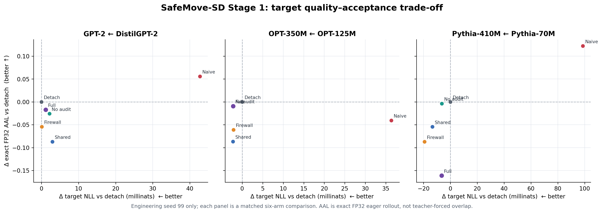
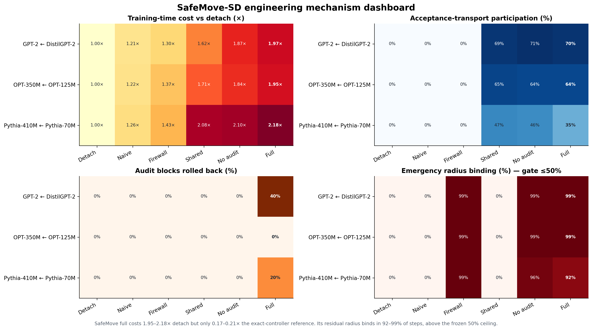
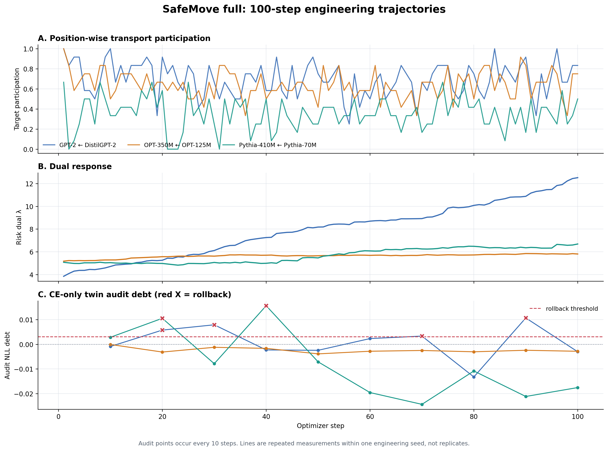

SafeMove-SD v0.2 Stage 0/1 실험 보고서¶
판정: Stage 0 identity PASS · Stage 1 engineering KILL 범위: seed 99, 세 independent pretrained AR target/drafter pair, 100-step LoRA adaptation 다음 단계: selection seeds
6–8은 열지 않았으며 계속 sealed
0. 결론¶
SafeMove-SD v0.2는 의도한 계산을 구현했지만, main method 가설은 engineering 단계에서 반증됐다.
path_naive는path_detach보다 teacher-forced overlap을 세 pair 모두+.021–+.027높였지만 target NLL도 모두+.036–+.099악화시켰다. 즉 실제 proposal path를 학습해도 이 연구의 motivation인 acceptance objective의 target-side negative transfer가 seed 99에서 다시 나타났다.move_full은 target NLL 차이를+.001/−.002/−.007로 줄였지만, primary utility인 FP32 exact AAL은 GPT/OPT/Pythia에서 각각−.017/−.009/−.161낮았다.- 비용은 detach 대비
1.95–2.18×, 같은 host의 historical exact-controller 대비.167–.214×였고 participation(.35–.70)과 rollback block 비율(0–.40)도 engineering 범위 안이었다. 그러나 emergency radius가 residual의.92–.99에서 bind했다. 사전 protocol은 이 비율이.50을 넘으면 router가 아니라 global cap이 실질적인 selector가 된 것으로 보고 재설계하도록 정했다.
따라서 이 결과를 성공으로 해석하지 않는다. Target 품질 방어는 일부 작동했지만 acceptance utility를 만들지 못했고, 핵심 proposal-conditioned routing도 cap에 거의 항상 잘렸다. v0.2를 고정한 채 selection panel로 진행할 근거가 없으므로 Stage 2는 시작하지 않았다.

1. 무엇을 시험했는가¶
Target p_θ와 drafter q_φ는 tokenizer-compatible token ID만 공유한다. Backbone,
embedding, hidden representation, LM head, LoRA parameter와 optimizer는 모두 분리돼
있다. MEDUSA/EAGLE/native-head는 이 보고서의 실험이나 결론에 포함하지 않는다.
고정된 proposal SAFEMOVE_MAIN_METHOD_PROPOSAL_KO.md과
v0.2 protocol SAFEMOVE_VALIDATION_PROTOCOL_KO.md에 따라 WikiText-103에서 100 step,
batch 4, sequence 64, rank-8 LoRA, BF16, target/draft AdamW LR 2e-4로 학습했다.
Drafter가 on-policy K=3 proposal을 만들고, 모든 arm은 같은 pathwise Hybrid LK
(η=3, γ=1, sum(survival·LK)/(B·K))를 draft에 적용했다. Target native CE에는
sampled proposal token을 label로 넣지 않았다.
Prospective Stage-1 primary comparison은 path_detach와 move_full이다. 아래 네 arm은
KILL 원인을 분리하기 위한 사후 postmortem이며 method selection evidence로
재해석하지 않는다.
path_naive: raw path loss를 target CE와 같은 AdamW update/state에 더함global_firewall: raw path residual을 CE-only Adam state 밖에서 적용move_shared: routed transport gradient를 CE와 shared Adam state에 적용move_no_audit: routed transport + firewall, CE twin rollback 없음move_full: routed transport + firewall + CE-twin audit/rollback
2. Stage 0: 구현 identity PASS¶
고정 protocol의 prospective identity checks가 먼저 통과했다.
| Check | 관찰 |
|---|---|
| Centered transport | forced τ=0 loss와 gradient가 exact zero; FP64 gradient가 두 KL-gradient 차이와 일치 |
| Stateless firewall | CE Adam m,v를 바꾸지 않고 CE-metric radius를 준수; LR 0 residual은 zero; weight decay는 한 번만 적용 |
| 실제 model path | GPT/OPT/Pythia의 10-step forced-τ=0 arm이 path_detach와 target/draft state hash 및 endpoint에서 3/3 exact match |
| Audit rollback | forced reject 뒤 live target parameter/state가 current CE twin과 exact match |
| Exact rollout | FP32 eager speculative output과 target-only greedy output이 exact match |
이 PASS는 구현이 설계된 연산을 수행한다는 뜻이다. SafeMove가 유용하거나 target quality를 형식적으로 보장한다는 뜻은 아니다.
3. Stage 1과 six-arm postmortem¶
아래 값은 모두 같은 pair의 path_detach 대비 차이다. 각 cell의 순서는
GPT-2/DistilGPT-2 · OPT-350M/OPT-125M · Pythia-410M/Pythia-70M이다. Target NLL은
낮을수록, exact AAL과 overlap은 높을수록 좋다.
| Arm | Δ target NLL | Δ TF overlap | Δ FP32 exact AAL | Training cost × |
|---|---|---|---|---|
path_detach |
.000 / .000 / .000 |
.000 / .000 / .000 |
.000 / .000 / .000 |
1.00 / 1.00 / 1.00 |
path_naive |
+.043 / +.036 / +.099 |
+.027 / +.025 / +.021 |
+.056 / −.040 / +.122 |
1.21 / 1.22 / 1.26 |
global_firewall |
+.000 / −.002 / −.019 |
+.001 / +.000 / −.002 |
−.054 / −.061 / −.087 |
1.30 / 1.37 / 1.43 |
move_shared |
+.003 / −.002 / −.013 |
+.001 / −.000 / −.001 |
−.087 / −.087 / −.055 |
1.62 / 1.71 / 2.08 |
move_no_audit |
+.002 / −.002 / −.006 |
+.001 / +.000 / −.002 |
−.026 / −.009 / −.004 |
1.87 / 1.84 / 2.10 |
move_full |
+.001 / −.002 / −.007 |
−.002 / +.000 / +.000 |
−.017 / −.009 / −.161 |
1.97 / 1.95 / 2.18 |
FP32 eager exact rollout은 WikiText-2, TinyStories, GSM8K text에서 K=3, 32 generated
tokens로 실행했다. 모든 18 pair×arm endpoint에서 speculative output과 대응하는
target-only greedy output의 exact-match rate는 1.0이었다. 이 AAL을 rejected BF16
cache benchmark나 production serving throughput과 섞지 않는다.
3.1 Motivation은 재현됐지만 proxy만으로는 부족하다¶
path_naive의 target NLL harm는 세 pair 모두 양수였다. 반면 teacher-forced overlap은
모두 좋아졌고 exact AAL은 두 pair에서 증가, 한 pair에서 감소했다. 따라서 이 pilot은
두 가지를 동시에 보여준다.
- 독립 pretrained AR에서도 target이 draft path loss를 직접 받으면 target 품질 비용이
생길 수 있다는 motivation은 on-policy
K=3설정에서도 남는다. - Teacher-forced overlap 개선을 actual acceptance-length 개선으로 부를 수 없고, AAL이 좋아져도 target NLL 비용과 함께 Pareto 판단해야 한다.
3.2 SafeMove v0.2가 실패한 지점¶
| Pair | Participation | Radius bind | Rollback blocks | move/detach cost | move/exact cost | Δ exact AAL |
|---|---|---|---|---|---|---|
| GPT | .695 |
.99 |
.40 |
1.97× |
.214× |
−.017 |
| OPT | .641 |
.99 |
.00 |
1.95× |
.167× |
−.009 |
| Pythia | .352 |
.92 |
.20 |
2.18× |
.173× |
−.161 |
Router는 τ=0과 τ>0을 모두 선택했고 cost와 rollback gate도 넘지 않았다. 그러나
active movement 대부분이 emergency norm radius에 잘렸다. 결과적으로 token/position별
transport가 제안한 크기가 실제 update에 보존되지 않았고, 세 pair 모두 exact AAL이
path_detach보다 낮았다. Raw residual에 firewall만 붙인 global_firewall도 AAL이
세 pair 모두 낮아, optimizer-state 격리만으로 utility 방향을 만들 수 없다는 기존
관찰도 재확인했다.
또한 v0.2 구현은 Stage-1 conditional mini-AAL과 cheap score의 block-level Spearman diagnostic을 구현하지 않았다. Endpoint FP32 exact AAL은 완료했지만, 이 누락된 prospective diagnostic을 PASS로 간주하지 않는다.


4. 판정과 다음 연구 방향¶
사전 규칙에 따라 emergency radius binding >50%는 구조 재설계 조건이다. 관찰값은
세 pair 모두 92–99%였고, move_full−path_detach exact AAL도 세 pair 모두 음수였다.
따라서 판정은 다음과 같다.
SafeMove-SD v0.2: engineering KILL. Stage-2 selection seeds 6–8 remain sealed.
이 결과가 target-aware joint training 전체를 부정하는 것은 아니다. 반증된 것은 현재의 transport risk/budget과 CE-metric residual firewall을 결합하면 simple drafter-only path보다 좋은 acceptance–quality trade-off를 만든다는 구체적 가설이다. 후속 버전은 seed 99 결과로 새 router/radius를 설계한 뒤 protocol version을 올려야 하며, v0.2 threshold를 사후 완화하거나 sealed seed를 열어 튜닝해서는 안 된다.
5. 해석 한계¶
- Stage 1은 pair당 engineering seed 하나뿐이다. Training seed가 inferential unit이며 token, step, prompt, sampling seed를 독립 표본으로 세지 않는다.
- 세 pair는 IID architecture population이 아니다. 이 결과로 architecture-independent universal law나 scratch foundation pretraining behavior를 주장하지 않는다.
path_naive−path_detach는 target trajectory 차이가 유도한 draft co-adaptation까지 포함하는 endpoint total effect다. 개별 component의 유일한 additive causal decomposition이 아니다.- Teacher-forced overlap은 exact AAL이 아니다. Postmortem arm은 원인 진단이지 preregistered method superiority panel이 아니다.
- 100-step LoRA adaptation 결과이며 downstream five-task non-inferiority나 장기/full fine-tuning은 시험하지 않았다.
6. 원본과 분석 산출물¶
- v0.2 machine-readable frozen manifest
SAFEMOVE_V0_2_STAGE01_MANIFEST.json - Stage 0 identity runs
runs/safemove_sd_v0_2_stage0_identities_v1/ - Stage 1 prospective pilot training
runs/safemove_sd_v0_2_stage1_pilot_v1/ - Same-host historical exact-controller cost reference
runs/safemove_sd_v0_2_stage1_exact_cost_reference_v1/ - Stage 1 prospective FP32 rollouts
runs/safemove_sd_v0_2_stage1_pilot_fp32_rollouts_v1/ - Six-arm postmortem training
runs/safemove_sd_v0_2_stage1_postmortem_v1/ - Six-arm postmortem FP32 rollouts
runs/safemove_sd_v0_2_stage1_postmortem_fp32_rollouts_v1/ - Fail-loud analysis, tables, figures and manifest
artifacts/safemove_sd_v0_2_stage1_analysis_v1/
Model adapter weights는 Git에 저장하지 않지만 metrics, histories, rollout rows, aggregate tables와 figure manifest는 보존한다. 이 보고서는 peer-reviewed 결과가 아니며, “proof”는 수학적 보장이 아니라 위의 고정된 engineering falsification 결과를 뜻한다.